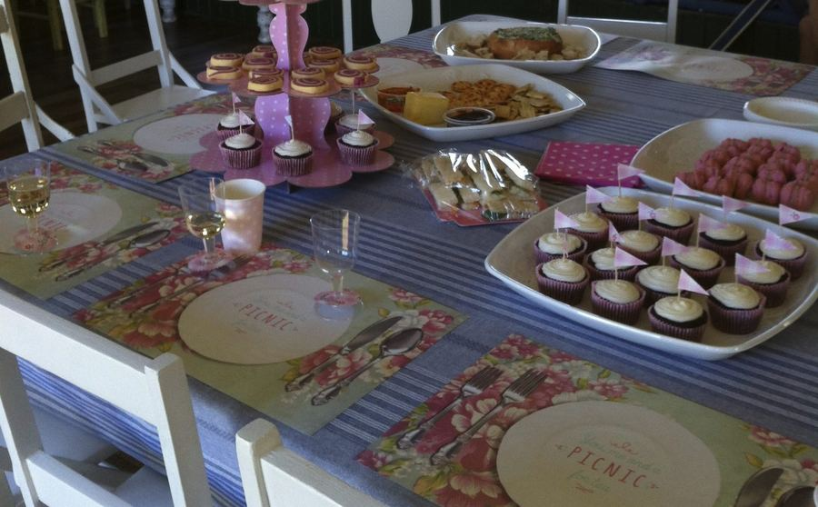

Facilities
Try a new experience for your next function: a team building day, business meeting, community group event, hens' party, Friday afternoon drinks, family celebration, birthday, engagement, reunion or Christmas party.
Phone to book: 0413 732 9864 courts. Seats 40.
Courts and clubhouse for parties, meetings and functions.
Croquet parties
Functions
$70 per hour (or part of) for court hire plus $10 per head through the gate (children free). Includes tuition and equipment.
Group bookings
$15 per head for up to 2 hours (minimum $100). Includes tuition and equipment and complimentary tea and coffee.
Good to know
- Bookings are essential. A non-refundable booking fee may apply.
- Arrangements can be made for a reschedule of dates if there are mitigating circumstances.



Seating for 40
The clubhouse has a kitchen with a microwave, a fridge, crockery and cutlery. Bring your own food, or engage caterers.
Email the clubThe clubhouse and courts
The clubhouse
- Seating for 40 people.
- Kitchen with microwave, refrigerator, crockery and cutlery.
- BYO food and refreshments, or you can engage caterers.
- Clean-up is your responsibility.
The clubhouse is also available for hire for meetings. Availability and hire charges on application.
The croquet
- 4 courts, mallets and balls supplied.
- Tuition in small groups.
- People playing croquet must wear suitable protective flat-soled shoes.
- It is the responsibility of visitors to care for their children on the courts during play.
- Children under 10 years are not permitted on the courts.
Bookings
Phone the club on 0413 732 986 or email stephens@croquetqld.org.